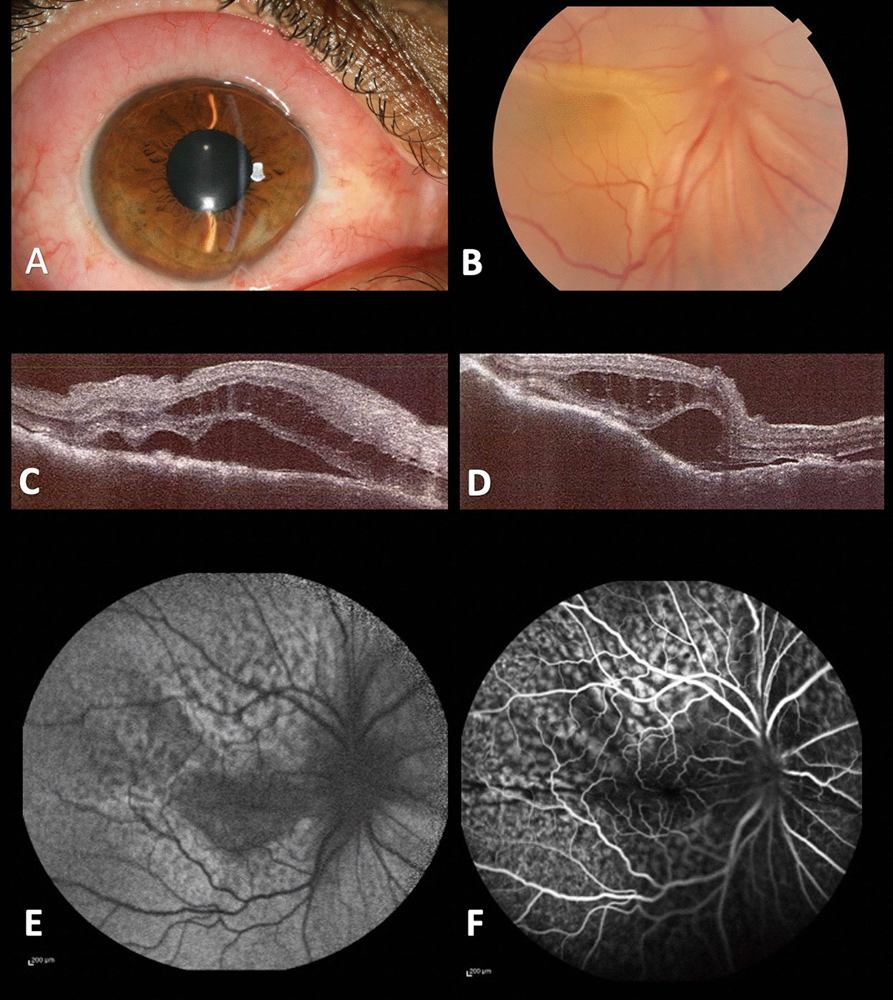
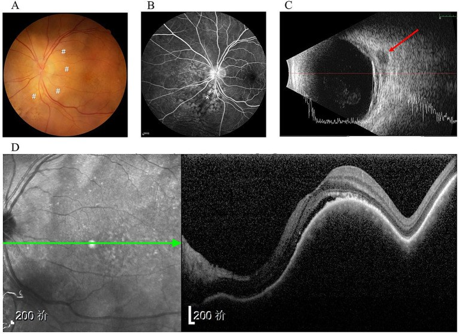
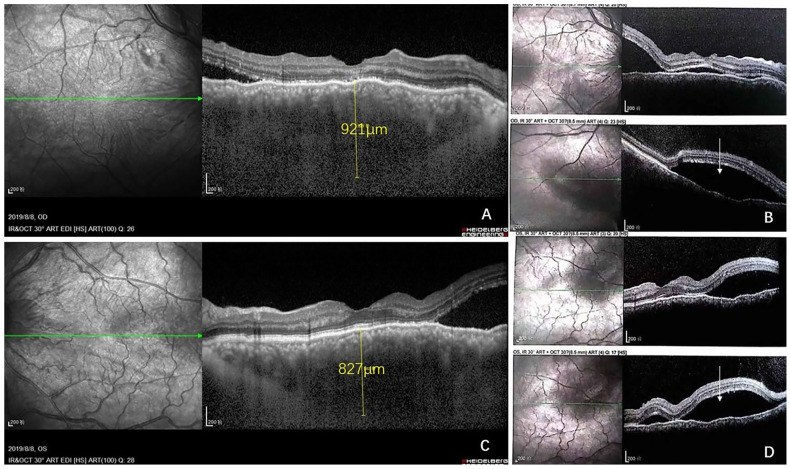
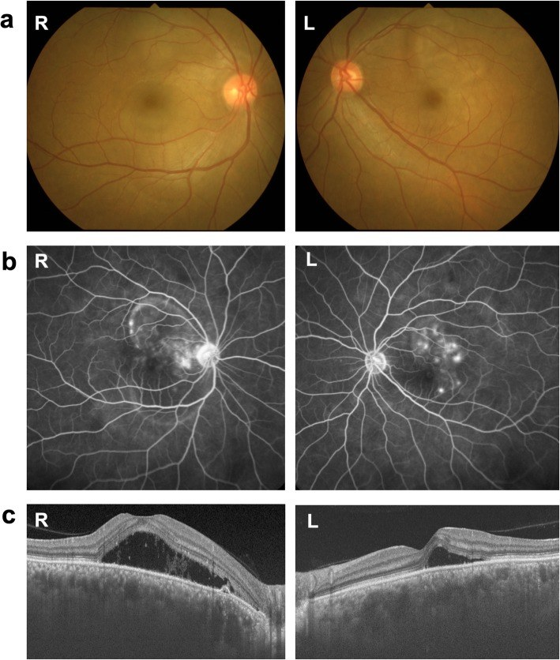

493 — U lympho nguyên phát của hắc mạc: dày hắc mạc kín đáo, trễ chẩn đoán tới 2 năm, phân biệt melanoma / di căn / hemangioma / VKH / Primary choroidal lymphoma
Tags: pattern:day-hac-mac pattern:khoi-noi-nhan-cau pattern:bong-thanh-dich vung:hac-mac vung:hoang-diem score:IL-10-IL-6 protocol:EDI-OCT protocol:FA-ICGA protocol:sinh-thiet-hac-mac
Mức chắc chắn (certainty): tổng hợp y văn (literature synthesis) — review hình ảnh mở CC BY 4.0 (Clin Exp Ophthalmol 2026, Mayo Clinic) + 4 ca nguyên văn CC BY 4.0 (Front Med 2025, Curr Oncol 2022, BMC Ophthalmol 2020, J Med Case Rep 2022); số liệu lấy nguyên từ bài gốc, tên tác giả đối chiếu PMCID.
Bài này trả lời 4 câu hỏi khi gặp một "khối/dày hắc mạc không rõ": (1) Dấu hiệu nào khiến nghĩ lympho chứ không phải melanoma? (2) Đo bằng gì — EDI-OCT hay siêu âm? (3) Lấy mô ở đâu, có nguy hiểm không? (4) Điều trị và theo dõi ra sao? Nối tiếp 491 – PVRL theo dõi tái phát (u lympho dịch kính–võng mạc) và 492 – Sinh thiết hắc mạc/dịch kính (kỹ thuật lấy mô). Bài này tập trung vào thể hắc mạc, nơi không có tổn thương dịch kính/dưới RPE điển hình.
1. Tổng quan bệnh học – cơ chế hình ảnh
1.1 Vì sao u lympho hắc mạc "tàng hình" — mô bệnh học giải thích mọi dấu hiệu
- Tế bào lympho ác tính xâm nhập lớp mô đệm hắc mạc theo dạng thấm (permeative), không tạo khối đẩy: hắc mạc dày lên nhưng bề mặt võng mạc phía trên còn nguyên ở giai đoạn đầu (khác melanoma đẩy võng mạc thành vòm). Đây là lý do bệnh nhân chỉ mờ nhẹ, kéo dài nhiều tháng → trễ chẩn đoán tới 2 năm.
- Vì sao B-scan thấy "rỗng âm" (hypoechoic/acoustic hollow): mô u là tế bào đồng nhất, ít collagen, không canxi → ít mặt phân cách phản xạ → hồi âm thấp; melanoma có hồi âm trong cao (tế bào gai, sắc tố, mạch) và hemangioma hồi âm cao do các vách mạch. Đây là chốt siêu âm quan trọng nhất.
- Vì sao OCT thấy "mặt biển động" (seasick): xâm nhập dạng nốt/dải không đều dưới hắc mạc → bề mặt trong hắc mạc nhấp nhô; mức nhấp nhô tương quan với độ dày u (calm 1,7 mm → undulating 4,1 mm). Thêm dịch dưới võng mạc do rối loạn chức năng RPE/bơm hắc mạc.
- Vì sao ICGA là modality ưu tiên: ICGA dùng hồng ngoại 790–805 nm xuyên qua RPE, thấy tuần hoàn hắc mạc; u lympho tạo đốm giảm huỳnh quang (hypofluorescent) do che lấp (masking) các mao mạch hắc mạc — 100% mắt trong các loạt ca có đốm giảm huỳnh quang nhỏ, rải rác. FA chỉ cho thấy rò điểm (pinpoint leakage) → bắt chước VKH.
- Vì sao có thể lan ra ngoài củng mạc: tế bào lympho đi theo ống củng mạc (emissarial canal) của mạch thần kinh → khối epibulbar hình lưỡi liềm/hạt đậu phía sau nhãn cầu — dấu hiệu rất gợi ý nhưng cũng gặp ở melanoma lan ngoài củng mạc.
- Sinh học: đa số u lympho hắc mạc nguyên phát là lympho B mức thấp (marginal zone/EMZL), tuổi muộn, tiến triển chậm; thể thứ phát (từ DLBCL toàn thân) tiến triển nhanh, tiên lượng theo bệnh nền.
1.2 Ngưỡng định lượng nằm lòng (bắt buộc nhớ)
| Chỉ số | Con số | Nguồn |
|---|---|---|
| Tỷ lệ mắc u lympho nội nhãn (Mỹ, 1995–2018) | 0,245 ca/triệu dân/năm | Clin Exp Ophthalmol 2026 (PMC12863966) |
| Trễ chẩn đoán | tới 2 năm | cùng nguồn |
| Thâm nhiễm hắc mạc vàng–trắng trên ảnh màu | 100% mắt; dạng rời rạc 91,2%, dạng mảng 5,9% | loạt 34 mắt (21 bệnh nhân) |
| Dày hắc mạc lan tỏa / nếp gấp hắc mạc | 47,1% / 11,8% | cùng nguồn |
| Vị trí tổn thương | trước xích đạo 67,6%, hậu cực 52,9%, dọc xích đạo 44,1% | cùng nguồn |
| EDI-OCT: khu trú một ổ / nhiều ổ / lan tỏa | 21% / 29% / 50% | loạt 14 mắt |
| Độ dày u trên siêu âm: bề mặt phẳng so với nhấp nhô | 1,7 mm so với 4,1 mm | cùng nguồn |
| FAF: dạng leopard spot / lan tỏa / bình thường | 30% / 11% / 59% | loạt 17 mắt |
| Đốm giảm huỳnh quang trên ICGA | 100% mắt | loạt 34 mắt |
| Siêu âm phát hiện lan ngoài củng mạc | ~76% mắt (lưỡi liềm 86,4%; nốt 45,5%) | loạt 29 mắt |
| Siêu âm đo dày quá so với EDI-OCT | +66% | cùng nguồn |
| Tỷ lệ IL-10/IL-6 trong dịch kính | > 1 gợi ý lympho (ca dưới đây = 0 vì tổn thương thể hắc mạc, dịch kính không tiếp xúc u) | Curr Oncol 2022 |
| Xạ trị toàn nhãn: sống còn 2 năm | 94% | Curr Oncol 2022 (trích) |
| EBRT: thoái triển u dài hạn / thị lực ổn định–tốt hơn | 96% / 76% (theo dõi trung bình 6 năm) | cùng nguồn |
| Liều "boom-boom" siêu thấp | 4 Gy / 2 phân liều / 2 ngày + MTX + rituximab nội nhãn | J Med Case Rep 2022 (PMC9035257) |
2. Mẫu hình + chẩn đoán phân biệt theo vị trí (gamut)
Câu hỏi lọc: "Dày hắc mạc lan tỏa (không phải khối vòm rõ), hồi âm thấp trên B-scan, đốm giảm huỳnh quang trên ICGA, không canxi — và bệnh nhân lớn tuổi, mờ mắt kéo dài?" → nghĩ lympho hắc mạc trước cả melanoma.
- Hậu cực / hoàng điểm (posterior pole):
- U lympho hắc mạc: dày lan tỏa, bề mặt nhấp nhô, dịch dưới võng mạc, thâm nhiễm vàng–trắng dưới võng mạc.
- Melanoma hắc mạc thể lan tỏa: khối vòm, hồi âm trong cao, sắc tố, vỡ sắc tố/Drusen cam, thường một mắt.
- Hemangioma hắc mạc: hồi âm cao, màu đỏ cam, trên OCT dày hắc mạc + "lỗ châm" (pachyvessels).
- Di căn hắc mạc: nhiều ổ, màu kem, tiền sử ung thư, thường hai mắt.
- Trước xích đạo / chu biên (peripheral):
- U lympho hắc mạc hay ở trước xích đạo (67,6%), có thể lan epibulbar qua ống củng mạc.
- Toàn bộ hắc mạc (diffuse):
- Bệnh VKH (Vogt–Koyanagi–Harada): hai mắt, dày hắc mạc + SRD + viêm dịch kính, đáp ứng corticoid; trên ICGA đốm giảm huỳnh quang mất dần khi viêm lắng.
- Tràn dịch hắc mạc (choroidal effusion): do hạ nhãn áp, thuốc, phẫu thuật — hồi âm trống, không có thâm nhiễm tế bào, thay đổi theo tư thế.
- Viêm hắc mạc mô đệm (stromal choroiditis): dày hắc mạc, đáp ứng corticoid, không có khối ngoài củng mạc.

- Điểm cần nhớ từ hình trên: "salmon patch" ở kết mạc (A) là dấu hiệu lan ra ngoài nhãn cầu — gặp ở u lympho nhưng cũng gặp ở lymphoma kết mạc; khi có mảng hồng–cam + dày hắc mạc, phải sinh thiết cả hai vị trí (ở ca này sinh thiết kết mạc cho chẩn đoán).
3. Bảng so sánh phân biệt (ma trận đối chiếu)
| Thực thể | Hình ảnh điển hình | Chốt vào (rule-in) | Chốt loại (rule-out) | Gợi ý xác nhận |
|---|---|---|---|---|
| U lympho hắc mạc (nguyên phát) | Dày hắc mạc lan tỏa/dạng nốt, bề mặt nhấp nhô (seasick), hồi âm thấp, đốm giảm huỳnh quang trên ICGA, FAF thường bình thường | Dày hắc mạc lan tỏa + hồi âm thấp + đốm giảm huỳnh quang ICGA + không canxi, ở người > 60 tuổi mờ mắt kéo dài | Có canxi hóa thô, hồi âm trong cao, khối vòm rõ → không phải lympho | EDI-OCT + B-scan + ICGA; sinh thiết hắc mạc/kết mạc; IL-10/IL-6; PET-CT + tủy xương |
| Melanoma hắc mạc | Khối vòm, sắc tố, hồi âm trong cao, Drusen cam, không có đốm giảm huỳnh quang kiểu rải rác | Hồi âm trong cao + sắc tố + khối vòm + một mắt | Dày lan tỏa phẳng, hồi âm thấp → ít khả năng melanoma | Siêu âm 10–20 MHz; FNAB nếu cần; theo dõi tăng kích thước |
| Hemangioma hắc mạc | Màu đỏ cam, hồi âm cao, dày hắc mạc + mạch hắc mạc lớn (pachyvessels) | Hồi âm cao + màu đỏ cam + không lan ngoài củng mạc | Hồi âm thấp, thâm nhiễm vàng–trắng → không phải hemangioma | EDI-OCT (pachyvessels), ICGA |
| Di căn hắc mạc | Nhiều ổ màu kem, hai mắt, tiền sử ung thư | Nhiều ổ hai mắt + tiền sử ung thư nguyên phát | Một ổ đơn độc không tiền sử → vẫn phải loại lympho | PET-CT, sinh thiết nếu cần |
| VKH | Hai mắt dày hắc mạc + SRD + viêm dịch kính, đốm giảm huỳnh quang mất khi điều trị | Đáp ứng nhanh với corticoid + hai mắt + viêm dịch kính | Không đáp ứng corticoid, hắc mạc vẫn dày, có khối ngoài củng mạc → không phải VKH | Theo dõi độ dày hắc mạc sau corticoid 1–2 tuần |
| Tràn dịch hắc mạc | Hồi âm trống, thay đổi theo tư thế, bong hắc mạc | Liên quan hạ nhãn áp/phẫu thuật + hồi âm trống | Có thâm nhiễm tế bào, dày không đổi theo tư thế → không phải tràn dịch | B-scan, đo nhãn áp |
4. Protocol chụp + quy trình chẩn đoán
4.1 Bộ ảnh tối thiểu (làm trong 1 buổi)
- Ảnh màu đáy mắt góc rộng (hoặc 7 trường) — ghi vị trí, dạng rời rạc/mảng/lan tỏa.
- EDI-OCT (enhanced depth imaging) — đo độ dày hắc mạc theo µm, mô tả khu trú và bề mặt (phẳng / gợn nhỏ / nhấp nhô "seasick"), độ sâu xâm nhập (chỉ sâu vs nông + sâu).
- B-scan siêu âm 10–20 MHz — hồi âm trong (chốt phân biệt), lan ngoài củng mạc, không canxi. Không dùng siêu âm để đo độ dày (đo quá +66% so với EDI-OCT).
- ICGA (ưu tiên hơn FA ở thể hắc mạc) + FA nếu cần đánh giá rò/RPE.
- FAF — dạng leopard spot chỉ có 30%; FAF bình thường (59%) không loại trừ.
- MRI hốc mắt (T1/T2 ± gadolinium) khi nghi lan ngoài củng mạc/hốc mắt hoặc cần phân biệt khối hốc mắt.
- Toàn thân: PET-CT, CT ngực–bụng–chậu, tủy xương, LDH, β2-microglobulin, sIL-2R, HIV — vì đa số u lympho hắc mạc là thứ phát; thể nguyên phát chỉ chẩn đoán sau khi loại trừ bệnh toàn thân.
4.2 Lấy mô — chỉ khi ảnh không đủ chốt
- Sinh thiết hắc mạc qua pars plana 27 G (kim nhỏ ít biến chứng, không giảm giá trị chẩn đoán so với kim lớn) hoặc sinh thiết chorioretinal; FNAB xuyên dịch kính là cách phổ biến nhưng mẫu nhỏ, dễ artifact.
- Ưu tiên sinh thiết tổn thương ngoài nhãn cầu dễ tiếp cận (kết mạc, hốc mắt) nếu có — như ca "salmon patch" ở trên.
- Xét nghiệm mô: H&E + hóa mô miễn dịch CD20, CD79a, BCL2, CD3, Ki-67, MUM1, c-myc + PCR clonality (IgH).
- Dịch kính/khoang dưới võng mạc: IL-10/IL-6 > 1 gợi ý lympho (nhưng thể hắc mạc đơn thuần có thể âm, ca dưới đây = 0).
4.3 Điều trị (không có chuẩn hóa — chọn theo thể và toàn trạng)
| Tình huống | Lựa chọn | Ghi chú |
|---|---|---|
| U lympho hắc mạc khu trú, không bệnh toàn thân | Xạ trị ngoài (EBRT) hoặc xạ trị siêu thấp liều "boom-boom" 4 Gy/2 phân liều | EBRT: sống còn 2 năm 94%, thoái triển 96%, thị lực ổn định/tốt hơn 76% |
| Có bệnh toàn thân (DLBCL, PCNSL) | Hóa trị/liệu pháp miễn dịch toàn thân (R-CHOP, HD-MTX, rituximab) | Tổn thương mắt thoái triển nhanh khi điều trị đúng bệnh nền |
| Tái phát/khu trú dai dẳng | Xạ trị bổ sung (median 36 Gy) ± MTX + rituximab nội nhãn | Theo dõi độ dày hắc mạc làm thước đo đáp ứng |
| Mắt mù, đau, glaucom tân mạch | Bỏ nhãn cầu (như ca 86 tuổi dưới đây) | Khi không còn chức năng và đau không kiểm soát |
4.4 Sơ đồ quyết định
flowchart TD
A[Day hac mac lan toa hoac khoi khong ro] --> B[EDI-OCT + B-scan 10-20 MHz + anh mau goc rong]
B --> C{Hoi am trong thap va khong canxi?}
C -->|Khong| D[Nghi melanoma hoac hemangioma - theo doi khoi dac]
C -->|Co| E[ICGA + FA + FAF]
E --> F{Co dom giam huynh quang rai rac tren ICGA?}
F -->|Co| G[Nghi u lympho hac mac]
F -->|Khong| H{Co dap ung corticoid trong 1-2 tuan?}
H -->|Co| I[VKH hoac viem hac mac mo dem]
H -->|Khong| G
G --> J[Kham toan than: PET-CT, tuy xuong, LDH, HIV]
J --> K{Co benh toan than?}
K -->|Co| L[Hoa tri mien dich theo benh nen]
K -->|Khong| M[Sinh thiet hac mac 27G hoac ton thuong ngoai nhan cau]
M --> N{Ket qua mo hoc va hoa mo mien dich}
N -->|Lympho B| O[Xa tri ngoai hoac boom-boom 4 Gy + MTX rituximab noi nhan]
N -->|Am tinh| P[Lay mo lai hoac theo doi 4-8 tuan]
5. Biến thể bình thường và cạm bẫy
- "FAF bình thường nên loại lympho": 59% mắt u lympho hắc mạc có FAF bình thường — không bao giờ dùng FAF bình thường để loại trừ.
- Đo độ dày bằng siêu âm: siêu âm đo quá +66% so với EDI-OCT (khó xác định ranh giới hắc mạc–củng mạc, hiệu chỉnh máy) → theo dõi đáp ứng bằng EDI-OCT, dùng siêu âm để đánh giá hồi âm và lan ngoài củng mạc.
- Thử corticoid như "test VKH": u lympho hắc mạc giả viêm (pseudo-inflammatory) và không đáp ứng corticoid — nhưng corticoid có thể làm giảm triệu chứng tạm thời rồi bệnh tiếp tục; dùng corticoid dài ngày có thể che lấp lymphoma và làm chậm chẩn đoán. Nếu nghi, theo dõi độ dày hắc mạc sau 1–2 tuần thay vì điều trị mù.
- Hai mắt + SRD = VKH? Ca BMC Ophthalmol 2020: hai mắt SRD + dày hắc mạc, corticoid không cải thiện, sau đó xác định DLBCL CD5+; điểm khác biệt: hắc mạc vẫn dày và tưới máu hắc mạc giảm kéo dài trên LSFG, trong khi VKH hồi phục tưới máu song song với giảm độ dày.
- Bất tương xứng OCT–ICGA: ở lympho, OCT thấy tổn thương rộng hơn ICGA; ở các bệnh khác trong gamut (u hắc mạc, viêm mô đệm) hai modality khớp nhau — đây là dấu hiệu tinh tế nhưng hữu ích.
- Xâm nhập "chỉ lớp sâu" → trễ chẩn đoán lâu hơn: thể sâu đơn thuần có thời gian trễ dài hơn; đừng yên tâm vì "chỉ dày nhẹ".
- Nhầm với tràn dịch hắc mạc sau phẫu thuật: tràn dịch hồi âm trống, thay đổi theo tư thế, không có thâm nhiễm tế bào.
- Bỏ sót lan ngoài củng mạc: siêu âm phát hiện ~76% — nếu không thấy trên siêu âm nhưng lâm sàng nghi, MRI hốc mắt là bước tiếp theo.
- Không sinh thiết vì "sợ mù": sinh thiết 27 G cho mẫu đủ và ít biến chứng; không có chẩn đoán mô học thì không có hóa trị/xạ trị đúng — ca 86 tuổi chỉ được chẩn đoán sau khi bỏ nhãn cầu vì trễ 2 năm.
6. Tự lượng giá — Blind Quiz
Ca 1 — Nam 86 tuổi, mờ mắt trái 2 năm tăng dần. Đáy mắt: thâm nhiễm vàng–trắng dưới võng mạc hậu cực. Ảnh dưới đây gồm ảnh màu, FA, siêu âm và OCT.

- Hỏi: (1) Ba dấu hiệu trên siêu âm/OCT gợi ý gì? (2) Chẩn đoán phân biệt chính? (3) Bước tiếp theo để chẩn đoán?
Bấm để hiện đáp án (findings + chẩn đoán)
- Findings: (A) thâm nhiễm vàng–trắng dưới võng mạc hậu cực (dấu #); (B) FA dạng hyperfluorescence lốm đốm (*) — không đặc hiệu; (C) siêu âm: dày hắc mạc lan tỏa + khối giảm hồi âm sau nhãn cầu (mũi tên) = lan ngoài củng mạc; (D) EDI-OCT: bề mặt hắc mạc nhấp nhô "seasick" + dịch dưới võng mạc, hắc mạc dày.
- Chẩn đoán: u lympho vùng rìa (EMZL) nguyên phát của hắc mạc, lan ngoài củng mạc + tổn thương tủy xương — xác định bằng mô học sau bỏ nhãn cầu (nhãn cầu mù, glaucom tân mạch đau không kiểm soát); PET-CT không thấy ổ khác → nguyên phát.
- Vì sao trễ: bệnh nhân chỉ mờ dần 2 năm, không đau, không viêm → bỏ qua; không có tổn thương dịch kính nên không nghĩ u lympho nội nhãn.
- Bài học: khối hắc mạc + dày lan tỏa + hồi âm thấp + lan ngoài củng mạc phải sinh thiết sớm, không chờ mù.
- Nguồn ảnh: Zhao L et al., Front Med (Lausanne) 2025 (PMC12597990), CC BY 4.0 — Fig. 1.
Ca 2 — Nam 56 tuổi, mờ mắt hai bên. EDI-OCT dưới đây (A, C) kèm mặt cắt qua hố trung tâm (B, D).

- Hỏi: (1) Đọc độ dày hắc mạc hai mắt. (2) Dịch nằm ở đâu? (3) Vì sao IL-10/IL-6 trong dịch kính có thể âm tính ở thể này?
Bấm để hiện đáp án
- Findings: (A) mắt phải hắc mạc 921 µm; (C) mắt trái hắc mạc 827 µm trên thước đo của ảnh (bài gốc ghi 882 µm — chênh lệch do vị trí đặt thước, cần đọc cả hai); (B, D) dịch dưới võng mạc (subfoveal fluid) hai mắt, bề mặt hắc mạc nhấp nhô.
- Chẩn đoán: u lympho hắc mạc (ở ca gốc là thể thứ phát của DLBCL — chẩn đoán nhờ sinh thiết hạch nách, không phải sinh thiết mắt); hắc mạc bình thường ~250–350 µm ở người lớn → 921 µm = dày gấp ~2,5–3 lần.
- Vì sao IL-10/IL-6 âm: tổn thương khu trú ở hắc mạc, dịch kính không tiếp xúc trực tiếp với u → cytokine không khuếch tán đủ vào dịch kính; IL-10/IL-6 > 1 có giá trị nhất ở u lympho dịch kính–võng mạc, không phải thể hắc mạc.
- Nguồn ảnh: Yang M et al., Curr Oncol 2022 (PMC9689627), CC BY 4.0 — Fig. 2.
Ca 3 — Nữ 62 tuổi, mờ mắt hai bên 3 tháng, được chẩn đoán "VKH" và điều trị corticoid liều cao nhưng không cải thiện. Ảnh dưới đây: đáy mắt, FA và EDI-OCT lúc nhập viện.

- Hỏi: (1) Dấu hiệu nào không khớp VKH? (2) Cần làm gì tiếp theo? (3) Điều gì xảy ra với hắc mạc khi điều trị đúng bệnh?
Bấm để hiện đáp án
- Findings: (a) đáy mắt: bong thanh dịch hai bên + phù đĩa thị; (b) FA: rò điểm (pinpoint leakage) + pooling — giống VKH; (c) EDI-OCT: dịch dưới võng mạc + dày hắc mạc hai mắt.
- Không khớp VKH: không đáp ứng corticoid; về sau hắc mạc vẫn dày trong khi tưới máu hắc mạc giảm kéo dài (LSFG) — VKH thì tưới máu hồi phục song song với giảm độ dày. Đây là u lympho hắc mạc giả viêm thứ phát DLBCL CD5+, chẩn đoán bằng sinh thiết tủy xương.
- Bước tiếp theo: không tăng corticoid mù; làm B-scan (hồi âm thấp), ICGA (đốm giảm huỳnh quang), PET-CT, tủy xương; sinh thiết nếu cần.
- Khi điều trị đúng (hóa trị R-CHOP/HD-MTX): SRD và dày hắc mạc thoái triển nhanh, thị lực hồi phục; tưới máu hắc mạc có thể không hồi phục hoàn toàn — dấu hiệu tổn thương vi mạch do u.
- Nguồn ảnh: Fukutsu K et al., BMC Ophthalmol 2020 (PMC7065374), CC BY 4.0 — Fig. 1.
Bài liên quan chéo
- 491 – PVRL: theo dõi và tái phát
- 492 – Sinh thiết hắc mạc & dịch kính: kỹ thuật, IL-10/IL-6
- 448 – U hắc mạc: melanoma vs nevus vs di căn
- 462 – U lympho nội nhãn (PVRL) vs viêm màng bồ đào giả danh
- 473 – U lympho T/NK nội nhãn & u lympho THỨ PHÁT ở mắt
- 475 – Viêm nội nhãn nội sinh do vi khuẩn
- 400 – Tổng quan Mắt & thị giác
Ảnh
images/493_lympho-hac-mac_Multimodal_PMC12597990.jpg— Zhao L et al., Front Med (Lausanne) 2025 (PMC12597990), CC BY 4.0.images/493_lympho-hac-mac_OCT_PMC9689627.jpg— Yang M et al., Curr Oncol 2022 (PMC9689627), CC BY 4.0.images/493_lympho-hac-mac_EDI-OCT_PMC7065374.jpg— Fukutsu K et al., BMC Ophthalmol 2020 (PMC7065374), CC BY 4.0.images/493_lympho-hac-mac_Fundus_PMC9035257.jpg— Mahdizad Z et al., J Med Case Rep 2022 (PMC9035257), CC BY 4.0.- Nguồn + giấy phép từng ảnh:
images/CREDITS.md.
Không dùng để chẩn đoán độc lập khi chưa có người hướng dẫn.